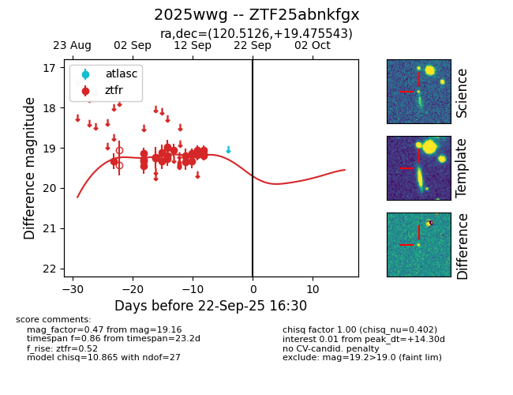
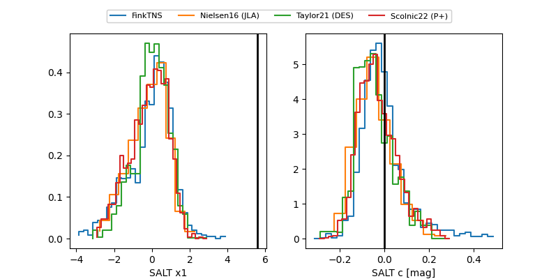

FINK: ZTF25abnkfgx
Lasair: ZTF25abnkfgx
ALeRCE: ZTF25abnkfgx
TNS: 2025wwg
YSE: 2025wwg
ZTF25abnkfgx (ztf,fink)
2025wwg (tns,yse)
equatorial (ra, dec) = (120.5126,+19.47554)
galactic (l, b) = (202.4410,+23.98369)


last ztfr=19.16
24 ztfr detections